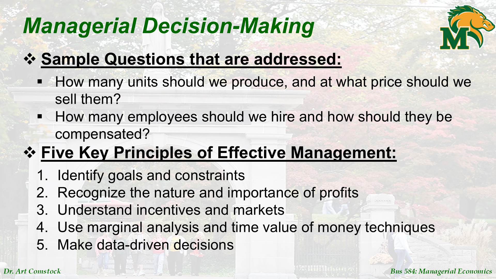
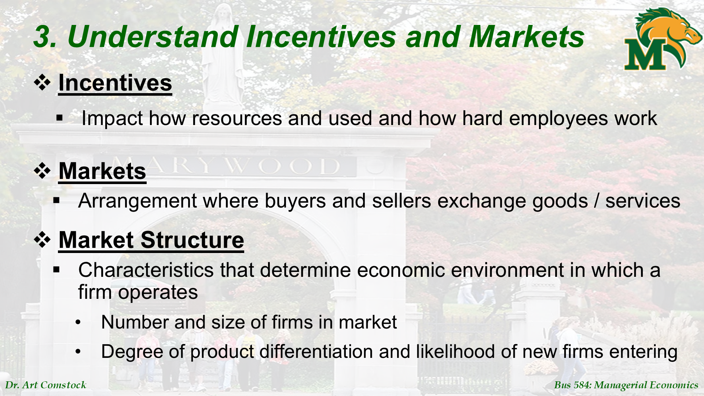
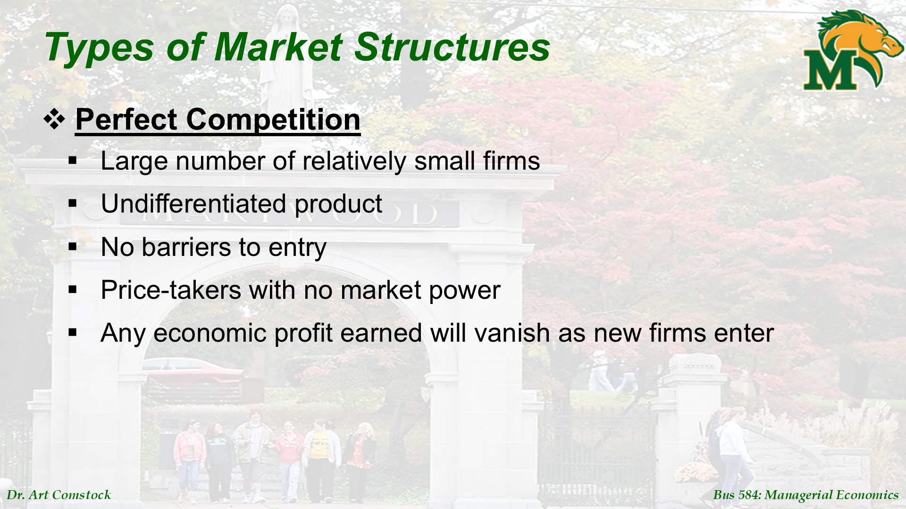
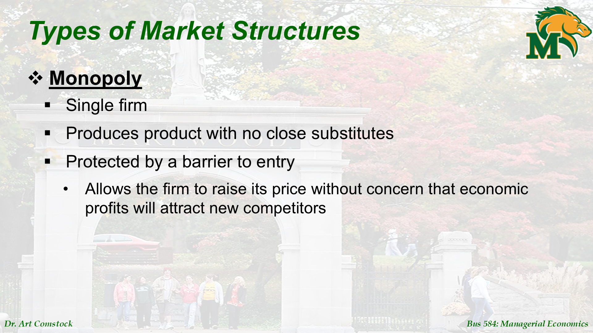
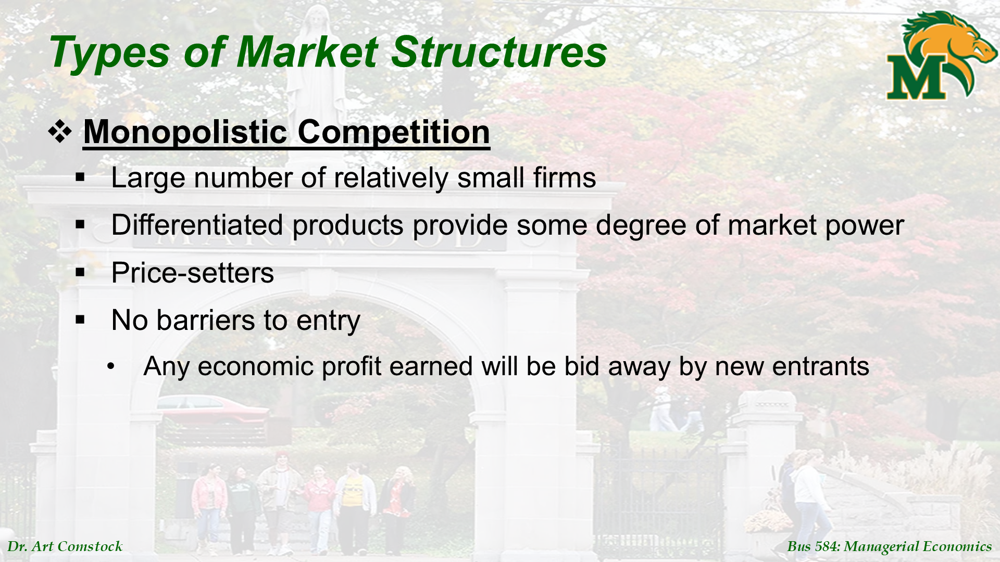
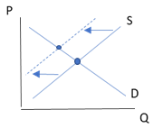

Detailed Explanation: Introduction to Managerial Economics
This is a slide-by-slide explanation of the Introduction.pptx file to understand every word mentioned.
Slide 1: Title

Content: Introduction Managers, Profits, and Markets
Explanation: This is the title page. The course discusses "Managerial Economics", and we will focus on 3 main things:
- Managers: Those who make decisions.
- Profits: The goal we want to reach.
- Markets: The playground we play in.
Slide 2: What is Managerial Economics?

Original Text:
Applies microeconomic theory to business problems Uses economic analysis to make decisions for profit maximization
Explanation:
- Managerial Economics: Is taking economic theories (like supply and demand) and applying them inside the company to solve business problems.
- Goal: Use this analysis to make decisions that make us earn more (Profit Maximization).
- Relation to Microeconomics: It relies on it to study people's behavior (will they buy or not?) and competitor behavior.
Slide 3: The Smart Manager's Questions

Original Text:
How many units should we produce? What price? Five Key Principles of Effective Management
Explanation: A manager asks themselves every day:
- How many units should I produce? And at what price should I sell them?
- How many employees should I hire and what salary should I give them?
To answer, we have 5 Key Principles for successful management (we will cover them one by one in the coming slides):
- Identify Goals and Constraints.
- Understand the importance of Profits.
- Understand Markets and Incentives.
- Use Marginal Analysis and Time Value of Money (TVM).
- Rely on Data (Data-driven).
Slide 4: Principle 1 - Goals and Constraints

Original Text:
Identify Goals and Constraints Profit Maximization Constraints: Scarcity, Technology, Prices of inputs, Time
Explanation:
- Goal: Any company's primary goal is to Maximize Economic Profit (not just sell a lot, but make high net profit).
- Constraints: But things aren't "limitless", there are things that tie us down:
- Scarcity: No infinite raw materials or money.
- Technology: Your machines have a specific capacity.
- Input Prices: Prices of materials and labor get expensive.
- Time: You have a deadline and limited time for production.
Slide 5: Principle 2 - Importance of Profit (Accounting vs Economic)

Original Text:
Accounting Profit = Total Revenue – Explicit costs Economic Profit = Total Revenue – Explicit costs – Implicit costs
Explanation: This is a very important point that confuses many people:
- Accounting Profit (What shows on paper):
- We take Revenues (what we sold) and subtract the expenses we actually paid (electricity, water, salaries, rent). These are called Explicit Costs.
- Economic Profit (What we base decisions on):
- We take Revenues and subtract expenses we paid (Explicit) AND also subtract something called Implicit Costs.
- Economic Profit tells us if we are on the right track or if we should close and go work another job.
Slide 6 & 7: Cost of Using Resources

Original Text:
Opportunity cost (what firm owners give up to use the resource)
Explanation: Opportunity Cost: This is the core of economic profit.
- Example: If you own a shop and work in it yourself.
- Your Explicit Cost: Zero (you don't pay yourself a salary).
- Your Implicit Cost: Is the salary you could have taken if you worked as a manager in another company (e.g., 20,000 EGP).
- Therefore, the shop must earn more than 20,000 to be considered "Economically Profitable". If it earned only 15,000, you are accounting-wise profitable, but economically losing (because it was better for you to work as an employee).
Slide 8: Porter’s 5 Forces

Explanation: This slide refers to a famous model called "Porter's 5 Forces" which determines when a company can profit in the long run, and this depends on the intensity of competition in the market. (Details in the following slides about market types)
Slide 9 & 10: Principle 3 - Incentives and Markets

Original Text:
Market Structure: Number and size of firms, Product differentiation
Explanation:
- Incentives: You must understand what moves employees (bonus, promotion) and what moves customers (discounts).
- Market Structure: What does your market look like? This is determined by:
- Number of firms (many or few?).
- Is your product unique or like others?
- Is it easy for someone new to open and compete with you or hard?
Slide 11: Perfect Competition

Explanation:
- This market is like a vegetable market:
- Very many small sellers.
- Product is all the same (Tomatoes are tomatoes).
- No one can control the price (Price-takers) – The market imposes the price.
- Result: No economic profit in the long run (because if someone profits, others enter the market and compete until profit disappears).
Slide 12: Monopoly

Explanation:
- Opposite of Perfect Competition:
- Only one company (like the electricity company).
- Product has no substitute.
- Very hard for anyone to enter and compete (Barriers to entry).
- Result: This company can raise prices as it pleases and make large, sustained economic profits.
Slide 13: Monopolistic Competition

Explanation:
- This is like restaurants and clothing stores:
- Many shops.
- But everyone offers something slightly different (different taste, different brand).
- Companies here have "some" control over price to differentiate their product.
- But still, if they profit a lot, new competitors will enter to imitate them.
Slide 14: Oligopoly

Explanation:
- Like mobile companies (Vodafone, Etisalat, Orange, WE):
- Few companies control the whole market.
- These companies "watch each other" (Interdependent).
- Meaning if Vodafone makes an offer, Etisalat must respond. Any decision one takes affects the others.
Slide 15: Principle 4 - Marginal Analysis and Time Value

Original Text:
Marginal Analysis Principle: MB = MC Time Value of Money (TVM)
Explanation:
- Marginal Analysis:
- To make the best decision, compare the Marginal Benefit and the Marginal Cost.
- Golden Rule: Continue as long as Benefit is greater than Cost.
- Time Value of Money (TVM):
- Wait for the "Present Value" (PV) explanation. A dollar today is better than a dollar tomorrow.
Slide 16: Value of the Firm

Equation Analysis:
Original Equation: $$\frac{\pi_1}{(1+r)} + \frac{\pi_2}{(1+r)^2} + ... + \frac{\pi_T}{(1+r)^T} = \sum_{t=1}^{T} \frac{\pi_t}{(1+r)^t}$$
Variable Explanation:
- Numerator (π - pi): Economic Profit in each time period.
- Denominator (1+r): Discount factor, where r is the interest rate.
- t (exponent): Time period number (Year 1, 2, ...).
Meaning:
- Value of the Firm = Sum of all future profits after "discounting" them to Present Value.
- How to increase firm value? By maximizing Economic Profit (π) in every period.
Slide 17: Principle 5 - Data-Driven Decisions

Explanation:
- You can't just guess. You must use data analysis (Econometrics).
- You must do Market Research and use Regression equations to forecast demand and the right price.
Slide 18: Common Mistakes (Avoid these)

Explanation: Many managers make these mistakes:
- Just growing the company: Increasing production to lower average cost, but ignoring that they might not sell it all.
- Maximizing Revenue not Profit: Selling a lot at a cheap price, so in the end losing money.
- Cost-plus Pricing: Saying "This cost me 10 so I'll sell it for 12". This is wrong because it doesn't look at what the customer is willing to pay. The customer might pay 20, so you lost money.
Detailed Explanation: Marginal Analysis
This is a slide-by-slide explanation of Marginal Analysis.pptx. This is the most important file in the course because it teaches us "how to think correctly".
Slide 1: Title

Content: Marginal Analysis for Optimal Decision Making
Explanation: The whole topic is about "Marginal Analysis" to make Optimal decisions.
Slide 2: What is Optimization?

Original Text:
Maximize (or minimize) an objective function Constrained optimizations Marginal analysis: Change value of choice variable by small increments
Explanation:
- Optimization: Means getting to the maximum good thing (like Profit) or minimum bad thing (like Cost).
- Constraints: Sometimes we are bound by a specific budget, we can't spend freely.
- Marginal Analysis: The idea is we change our decision "bit by bit" (Small Increments). We don't change everything at once, we see "If we add one unit, what happens?".
Slide 3: Net Benefit

Original Text:
Net Benefit (NB) = Total Benefit (TB) – Total Cost (TC) Maximize NB
Explanation:
- Any decision we take has a "Benefit" and a "Cost".
- Net Benefit (NB): Is the difference between them.
- Our goal is always for this number (NB) to be as large as possible.
Slide 4: Optimal Level

Explanation: This slide paves the way for the idea "When do I stop?". When do I know that the quantity I am producing is the best quantity? Answer in the next slide.
Slide 5: Marginal Benefit and Marginal Cost

Image Analysis:
- First Equation: $MB = \frac{\Delta TB}{\Delta A}$
- (Change in Total Benefit divided by Change in Activity).
- Second Equation: $MC = \frac{\Delta TC}{\Delta A}$
- (Change in Total Cost divided by Change in Activity).
- Note that the Triangle $\Delta$ means "Change".
Slide 6: Relation between Marginal and Total

Graph Analysis:
Panel A - Measuring slopes along TB and TC (Top Graph):
- Red Curve (TB): Total Benefit curve.
- Points: c, c', c''
- Red Curve (TC): Total Cost curve.
- Points: d, d', d''
- Greatest Distance: At A* = 350, the difference between TB and TC is maximum.
Panel B - Marginals give slopes of totals (Bottom Graph):
- Red Line (MC = slope of TC): Going up.
- At (200, $6.40) and (600, $8.20).
- Red Line (MB = slope of TB): Going down.
- At (200, $5.40) and (600, $3.20).
- Intersection Point: At A* = 350 approximately, the two lines intersect at ~$5.20 (MB = MC).
Slide 7: How to find the Optimal Solution?

Graph Analysis:
- Black Curve (Parabola): This is the Net Benefit curve.
- Shape: Inverted U shape (or bell). Goes up, reaches peak, then goes down.
- Peak (Point M): At activity level A* = 350, Net Benefit is maximized (about $310).
- Left of Peak (MB > MC): Curve involves going up. Every time you increase activity, your net profit increases. Go ahead!
- Right of Peak (MB < MC): Curve goes down. Every time you increase activity, net profit decreases. Stop!
- At Peak (MB = MC): This is the optimization spot. You can't earn more than this.
Slide 8: Decision Rule (Very Important)

Original Text:
If MB > MC -> Increase Activity If MC > MB -> Decrease Activity Optimal Level: MB = MC
Explanation: This rule applies to our whole life:
- If MB > MC: (Benefit from next step > Cost) -> Go ahead, your interest is still increasing.
- If MC > MB: (Cost became > Benefit) -> Stop immediately, you are losing from your net profit.
- When to stop? When MB = MC. This is the point where you can't earn a penny more. This is the Peak (Optimal).
Slide 9: Costs to Ignore

Original Text:
Sunk costs: Previously paid & cannot be recovered (Ignore) Fixed costs: Constant (Ignore) Average costs: (Ignore)
Explanation: When taking a "Marginal" decision (produce more or not), there are costs you must "ignore":
- Sunk Costs: Money spent in the past and won't come back (like R&D, or license fee). It's gone, don't cry over spilt milk.
- Fixed Costs: Rent for example. Produced one unit or a thousand, rent is constant. So it doesn't affect the "extra unit" decision.
- Average Costs: These are misleading, focus only on Marginal Cost (MC).
Slide 10: Constrained Optimization

Image Analysis:
- Main Concept: MB/P (Marginal Benefit per Dollar).
- Idea: If you have a limited budget, you can't just look at MB. You must look for the "Best buy" / "Most value for your money".
- Rule: Choose the activity that gives you the highest MB/P.
Slide 11: Constrained Optimization Equation

Equation Analysis:
-
Equation: $$ \frac{MB_A}{P_A} = \frac{MB_B}{P_B} $$
-
Explanation:
- Numerator: Marginal Benefit (MB) from each activity.
- Denominator: Price (P) of each activity.
- Meaning: The "Dollar" you spend on A must bring you the same benefit as the dollar on B. If one is better, switch your money to it.
Detailed Explanation: Supply and Demand
This is a slide-by-slide explanation of Supply and Demand.pptx. This is the foundation of all economics.
Slide 1: Title

Content: Demand, Supply, and Market Equilibrium
Explanation: We will talk about the three pillars of markets: Demand (Customers), Supply (Companies), and Market Equilibrium (Price).
Slide 2: Law of Demand

Original Text:
Law of Demand: Quantity demanded (Qd) increases as price falls Inverse relationship
Explanation:
- Law of Demand: Very intuitive. When things get cheaper, people buy more. When expensive, people buy less.
- Relationship between Price ($P$) and Quantity Demanded ($Q_d$) is Inverse.
Slide 3: Factors Affecting Demand

Original Text:
Qd affected by: Price (P), Income (M), Prices of related goods (PR), Tastes, Expected future price (Pe), Number of consumers (N)
Explanation: What makes you buy a specific mobile?
- Price ($P$): If expensive, I won't get it.
- Income ($M$): If I got a bonus, I'll buy more.
- Related Goods Prices ($P_R$): If iPhone price increases, I might buy Samsung (Substitute).
- Tastes: I like this brand.
- Expectations ($P_e$): If I know it will get expensive next week, I'll buy it now.
- Number of Customers ($N$): When population increases, demand for food increases.
Slide 4: Income Effect (Normal vs. Inferior)

Explanation: When your income increases, how do you behave?
- Normal Good: You buy more of it (like meat, branded clothes). Most goods are like this.
- Inferior Good: You buy less of it (like crowded public transport, or cheap food). When you become richer, you take a taxi and stop riding the bus.
Slide 5: Related Goods (Substitutes & Complements)

Explanation: Relation of goods to each other:
- Substitutes: Like Pepsi and Coke. If Pepsi price increases, people run to buy Coke (and vice versa). Relationship is Positive.
- Complements: Like Tea and Sugar. If Sugar becomes very expensive, people drink less tea (so Demand for Tea decreases). Relationship is Inverse.
Slide 6: General Demand Function

Explanation: This is the mathematical equation combining all these factors. $Q_d = f(P, M, P_R, ...)$
Slide 7: Graphing Demand Curve

Original Text:
Inverse demand function: P is plotted on vertical axis Movement along demand curve vs. Shift in demand
Explanation:
- When we graph, we put Price ($P$) on Vertical Axis (Y), and Quantity ($Q$) on Horizontal Axis (X).
- Very Important:
- If Price only changes -> We move along the curve (Movement along the curve).
- If anything else (Income, Taste...) changes -> The whole line Shifts.
Slide 8: Demand Curve (Graph) (1)

Content Analysis:
Equation: $$Q_d = 1,400 - 10P$$
Table: | Price | Quantity demanded | |:---:|:---:| | 140 | 0 | | 120 | 200 | | 100 | 400 | | 80 | 600 | | 60 | 800 | | 40 | 1,000 | | 20 | 1,200 |
Graph:
- Blue Curve ($D_0$): Downward Sloping.
- Important Points: A, B.
Slide 9: Demand Changes - Overview

Explanation:
- Factors shifting the demand curve: Income ($M$), Tastes, Substitute/Complement Prices ($P_R$), Expectations ($P_e$), Number of Consumers ($N$).
Slide 10: Increase and Decrease in Demand (Graph)

Graph Analysis:
- $D_0$: Original.
- $D_1$: Increase (Shift Right).
- $D_2$: Decrease (Shift Left).
Slide 11: Summary of Demand Shifters (Table)

Table Analysis: | Determinant | Increase Demand (Shift Right) | Decrease Demand (Shift Left) | |---|---|---| | 1. Income ($M$) - Normal | $M$ Up | $M$ Down | | 1. Income ($M$) - Inferior | $M$ Down | $M$ Up | | 2. Price of Substitute ($P_R$) | $P_R$ Up | $P_R$ Down | | 2. Price of Complement ($P_R$) | $P_R$ Down | $P_R$ Up | | 3. Tastes ($T$) | $T$ Up | $T$ Down | | 4. Expected Price ($P_e$) | $P_e$ Up | $P_e$ Down | | 5. Number of Consumers ($N$) | $N$ Up | $N$ Down |
Slide 12: Law of Supply

Original Text:
Law of Supply: Quantity supplied (Qs) rises as price rises Positive relationship
Explanation:
- Now for companies.
- When price increases in market, companies are happy and want to sell more.
- Relationship is Positive.
Slide 13: Factors Affecting Supply

Factors:
- Price ($P$): Move along curve.
- Input Prices ($P_I$): Raw material costs.
- Prices of Production Related Goods ($P_r$).
- Technology ($T$).
- Expected Price ($P_e$).
- Number of Firms ($F$).
- Taxes.
Slide 14: Related Goods in Production

Explanation:
- Substitutes in Production: Car factory making Sedan and SUV. If SUV price goes up, shift workers to produce more SUVs, less Sedans.
- Complements in Production: Beef and Leather. If you slaughter for beef, you get leather automatically.
Slide 16: Graphing Supply Curve

Explanation:
- Change in Quantity Supplied: Movement along curve (Price only).
- Change in Supply (Shift): Whole line moves.
Slide 17: Supply Curve (Graph)

Content Analysis: Equation: $$Q_s = -400 + 20P$$
Graph:
- Blue Curve ($S_0$): Upward Sloping.
- Meaning: Price Up -> Quantity Up.
Slide 18: Supply Changes (Overview)

Explanation:
- General Rule:
- Anything making production easier or cheaper -> Increase Supply (Shift Right).
- Anything making production harder or expensive -> Decrease Supply (Shift Left).
Slide 19: Increase in Supply

Graph Analysis:
- Shift Right (from $S_0$ to $S_1$).
- At Price $40, Quantity increased from 400 to 800.
Slide 20: Summary of Supply Shifters (Table)

Table Analysis: | Determinant | Increase Supply (Shift Right) | Decrease Supply (Shift Left) | |---|---|---| | 1. Input Prices ($P_i$) | $P_i$ Down | $P_i$ Up | | 2. Price of Prod. Substitute | $P_r$ Down | $P_r$ Up | | 2. Price of Prod. Complement | $P_r$ Up | $P_r$ Down | | 3. Technology ($T$) | $T$ Up | $T$ Down | | 4. Expected Price ($P_e$) | $P_e$ Down | $P_e$ Up | | 5. Number of Firms ($F$) | $F$ Up | $F$ Down |
Slide 21: Market Equilibrium

Original Text:
Qd = Qs Shortage vs. Surplus
Explanation: Market reaches rest (Equilibrium) when What people want = What companies produced. ($Q_d = Q_s$).
Slide 22: Equilibrium Shape (Graph + Table)

Analysis:
- Equilibrium Point (A): Price $60, Quantity 600.
- Surplus: Above A.
- Shortage: Below A.
Slide 23: Consumer Surplus

Analysis:
- Consumer Surplus: Area below Demand curve and above Price line.
- Meaning: Difference between what customer is "willing to pay" and what they "actually paid". This is a gain for the customer.
Slide 24: Value of Market Exchange

Analysis:
- Upper Triangle: Consumer Surplus.
- Lower Triangle: Producer Surplus.
- At unit 400: Benefit > Cost.
- At Equilibrium: Benefit = Cost at the margin. No more profit from exchange.
Slide 25: Demand Shift

Scenario:
- Demand Shifts Right -> Price and Quantity Increase.
Slide 26: Supply Shift

Scenario:
- Supply Shifts Right -> Price Decreases and Quantity Increases.
Slides 27-30: Mixed Scenarios

Explanation:
- If both Demand and Supply change, effect on Price or Quantity depends on "which is stronger".
Slide 31: Ceiling and Floor

Analysis:
- Price Ceiling: Government sets price below equilibrium. Causes Shortage.
- Price Floor: Government sets price above equilibrium. Causes Surplus.
Detailed Explanation: Week 1 Practice Problems (Excel)
This is a step-by-step explanation of the problems in the Excel file.
Question 1: Parry's Pizza Parlor
Data:
- Revenues: 800,000
- COGS: 400,000
- Admin Expenses: 40,000
- Selling Expenses: 60,000
- Interest: 20,000
- Tax: 40%
- Important Info: Parry (Owner) is an engineer, would earn 53,000 if he worked elsewhere (Opportunity Cost).
Req 1: Calculate Accounting Profit
- Total Operating Costs: $400,000 + 40,000 + 60,000 = 500,000$
- Operating Income: $800,000 - 500,000 = 300,000$
- Net Income Before Tax: $300,000 - 20,000 = 280,000$
- Tax: $280,000 \times 40\% = 112,000$
- Net Accounting Profit: $280,000 - 112,000 = \mathbf{168,000}$
Req 2: Calculate Economic Profit
- Formula: $\text{Economic Profit} = \text{Accounting Profit} - \text{Implicit Costs}$
- Implicit Cost = Opportunity cost (53,000).
- Calc: $168,000 - 53,000 = \mathbf{115,000}$
- Decision: Positive, so Parry is making the right choice.
Question 2: Supply and Demand Calc
Data:
- Demand: $Q_d = 680 - 9P + 0.006M - 4P_R$
- Supply: $Q_s = 30 + 3P$
- $M = 15,000$
- $P_R = 20$
Step 1: Simplify Demand Equation $$ Q_d = 680 - 9P + 0.006(15,000) - 4(20) $$ $$ Q_d = 680 - 9P + 90 - 80 $$ $$ \mathbf{Q_d = 690 - 9P} $$
Req 1: Quantity Demanded if P = 40
- $Q_d = 690 - 9(40)$
- $Q_d = 690 - 360 = \mathbf{330}$
Req 2: Equilibrium (P and Q)
- $Q_d = Q_s$
- $690 - 9P = 30 + 3P$
- $660 = 12P$
- $P = 660 / 12 = \mathbf{55}$
- $Q = 30 + 3(55) = \mathbf{195}$
Req 3: What if P = 40?
- Price (40) is lower than Equilibrium (55).
- $Q_d = 330$
- $Q_s = 30 + 3(40) = 150$
- $Q_d > Q_s$ -> Shortage.
- Shortage Amount = $330 - 150 = \mathbf{180}$ units.
Question 3: Tennis Sneakers Market
Scenarios affecting Price and Quantity.
Case 1: Graphite Shortage (Rackets get expensive)
- Rackets and Sneakers are Complements.
- Racket Price Up -> Demand for Sneakers Down (Shift Left).
- Result: Price Down ($\downarrow P$), Quantity Down ($\downarrow Q$).

Case 2: Ons Jabeur Wins (Fame)
- More people like tennis (Tastes).
- Demand Increases (Shift Right).
- Result: Price Up ($\uparrow P$), Quantity Up ($\uparrow Q$).

Case 3: Labor Strikes
- Production issues -> Supply Decreases (Shift Left).
- Result: Price Up ($\uparrow P$), Quantity Down ($\downarrow Q$).

Question 4: Customer Service Manager (Optimization)
Data:
- Staff Types:
- HS (High School): Wage 20,000.
- B (Bachelor): Wage 40,000.
- Budget: 160,000.
- Goal: Maximize Customers Served.
Solution using Marginal Analysis ($MB/P$): Calculate MB per Dollar ($MP / Wage$).
Calculated Values:
- HS: $MP/Wage$ starts at $80/20k = 0.004$.
- B: $MP/Wage$ starts at $90/40k = 0.00225$.
Hiring Steps (Budget 160k):
- First hire: 1st HS (0.004) > 1st B (0.00225). Hire HS. (Left 140k).
- Second: 2nd HS (0.003) > 1st B (0.00225). Hire HS. (Left 120k).
- Third: 3rd HS (0.0025) > 1st B (0.00225). Hire HS. (Left 100k).
- Fourth: 4th HS (0.002) vs 1st B (0.00225). Hire B. (Left 60k).
- Fifth: 4th HS (0.002) vs 2nd B (0.002). Equal!
- Hire both.
- Hire 4th HS (Left 40k).
- Hire 2nd B (Left 0).
Conclusion:
- Hire 4 HS Staff.
- Hire 2 Bachelor Staff.
- Total 160,000.